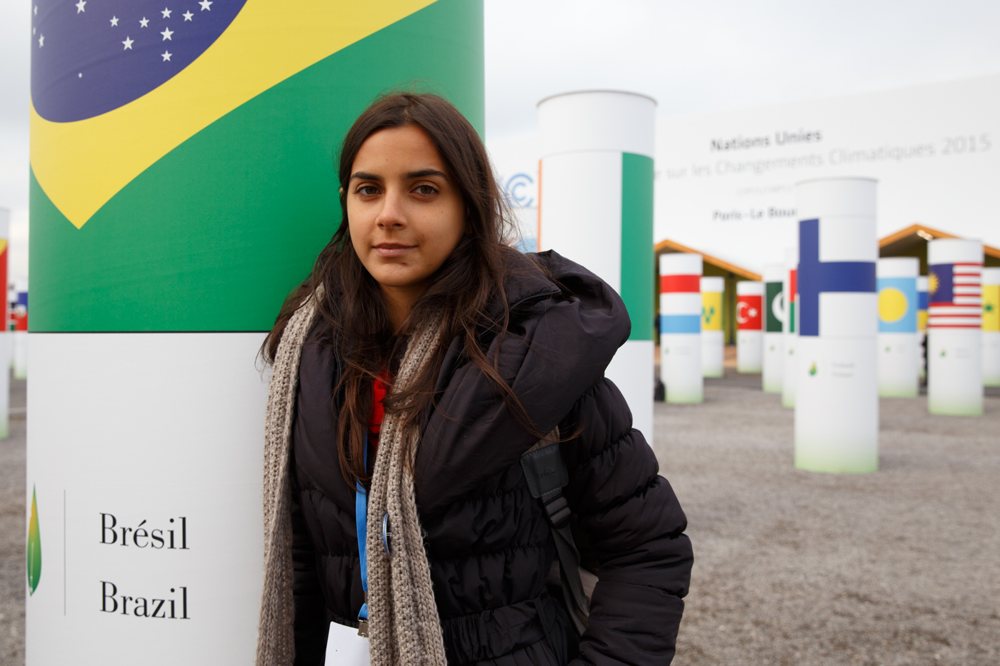
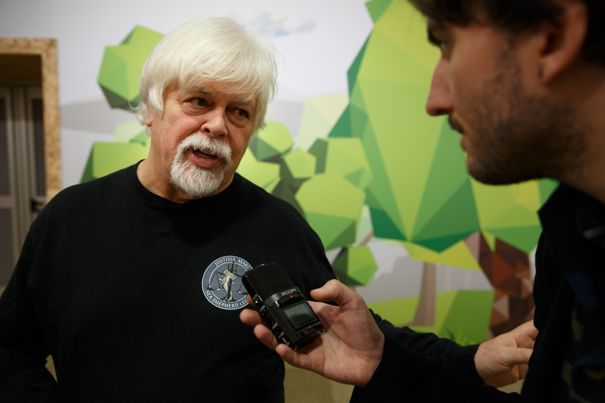
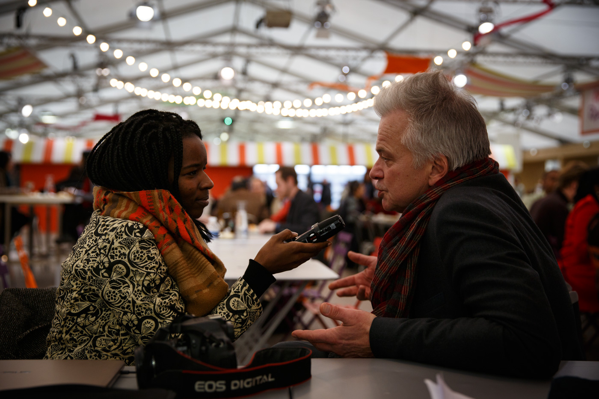

Rencontres et portraits lors de la COP21
Portraits de militants, négociateurs, participants et conférenciers réalisés au Bourget entre le 8 et le 10 décembre 2015, lors de la COP21 et au Centquatre dans le cadre de la Zone d'action pour le climat, dans le cadre du Médialibre de l'EMI-CFD.
 Sawsan Abdalla Ali Obeid Alla, négociatrice pour le Soudan, lors de la COP 21 au Bourget le 8 décembre 2015.
Sawsan Abdalla Ali Obeid Alla, négociatrice pour le Soudan, lors de la COP 21 au Bourget le 8 décembre 2015.
 Yuhi Takahata, militante anti-nucléaire, lors de la projection au CENTQUATRE à Paris lors de la Zone d'action pour le climat (ZAC) du 7 au 11 décembre 2015 du documentaire, Welcome to Fukushima, réalisé par Alain de Halleux sur la ville Minamisoma située à 20km de la centrale nucléaire en périphérie de la zone d'exclusion.
Yuhi Takahata, militante anti-nucléaire, lors de la projection au CENTQUATRE à Paris lors de la Zone d'action pour le climat (ZAC) du 7 au 11 décembre 2015 du documentaire, Welcome to Fukushima, réalisé par Alain de Halleux sur la ville Minamisoma située à 20km de la centrale nucléaire en périphérie de la zone d'exclusion.
 Brice Lalonde, ancien ministre de l'environnement, juste avant son intervention à la conférence "Entreprises et justice climatique" à l'espace Générations climat à la COP 21 ce jeudi 10 décembre 2015.
Brice Lalonde, ancien ministre de l'environnement, juste avant son intervention à la conférence "Entreprises et justice climatique" à l'espace Générations climat à la COP 21 ce jeudi 10 décembre 2015.

Luana Adriano Araujo, militante au sein de l'association Verdeluz, fait partie de la délégation brésilienne en tant que Party Overflow. Margaux BOFFI, traductrice lors des conférences de la COP 21 au Bourget le 8 décembre 2015.
Margaux BOFFI, traductrice lors des conférences de la COP 21 au Bourget le 8 décembre 2015.

Paul Watson, fondateur de l'ONG Sea Shepherd et réfugié politique climatique en France, en visite à l'espace Générations Climat au Bouget le 10 décembre 2015.
Pierre Ducret interviewé par Rouguyata Sall, quelques minutes avant son intervention "Les entreprises sont-elles sincères ?", lors de la conférence organisée par Le monde, à l'espace Générations climat au Bourget. Lire plus